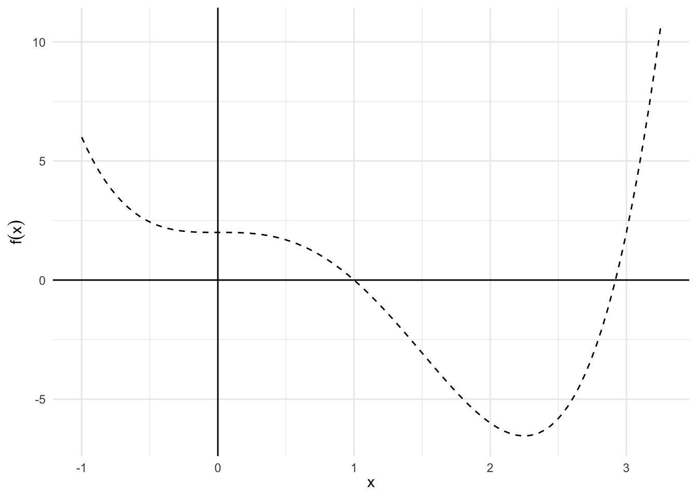

library(tidyverse)
library(broom)
library(patchwork)
options(digits = 3)
set.seed(1234)
theme_set(theme_minimal())\[\newcommand{\E}{\mathrm{E}} \newcommand{\Var}{\mathrm{Var}} \newcommand{\Cov}{\mathrm{Cov}}\]
Optimization is a method for selecting the best element (based on some criterion) from some set of available alternatives. In the simplest form, an optimization problem consists of maximizing or minimizing a real function by systematically choosing input values from within an allowed set and computing the value of the function.
More formally, given a function \(f: A \rightarrow \Re\) from some set \(A\) to the real numbers, we seek to determine an element \(x_0 \in A\) such that \(f(x_0) \leq f(x)\) for all \(x \in A\) (minimization) or such that \(f(x_0) \geq f(x)\) for all \(x \in A\) (maximization). Typically \(A\) is some subset of \(\Re^n\), often specified by a set of constraints. The domain of \(A\) is called the search space or the choice set, while the elements of \(A\) are called candidate solutions or feasible solutions.
The function \(f\) is known by several possible names:
By contention, optimization problems are usually stated in terms of minimization. When using canned functions in R or Python to optimize over functions, make sure your function is expressed appropriately. That is, if the optimizer finds solutions that minimize your function \(f\), make sure \(f\) is expressed so that it needs to be minimized, rather than maximized. For example, if your function defines utility (a maximization problem) and your optimizer finds solutions that minimize the function, invert your function by multiplying the result times \(-1\). \(\min [ -f(x)] \equiv \max [f(x)]\).
Relatively simple functions can be optimized analytically using differentiation. Here let’s review the standard approach.
data_frame(x = c(-4, 4)) %>%
ggplot(aes(x)) +
stat_function(fun = function(x) -x^2, size = .5) +
geom_vline(xintercept = c(-3, 3), linetype = 2) +
labs(title = expression(f(x) == -x^2),
x = expression(x),
y = expression(f(x)))\[ \begin{eqnarray} f'(x) & = & - 2 x \\ 0 & = & - 2 x^{*} \\ x^{*} & = & 0 \end{eqnarray} \]
\[ \begin{eqnarray} f^{'}(x) & = & - 2x \\ f^{''}(x) & = & - 2 \end{eqnarray} \]
data_frame(x = c(-5, 5)) %>%
ggplot(aes(x)) +
stat_function(fun = function(x) x^3, size = .5) +
geom_vline(xintercept = c(-3, 3), linetype = 2) +
labs(title = expression(f(x) == x^3),
x = expression(x),
y = expression(f(x)))\[ \begin{eqnarray} f'(x) & = & 3 x^2 \\ 0 & = & 3 (x^{*})^2 \\ x^{*} & = & 0 \end{eqnarray} \]
\[ \begin{eqnarray} f^{''}(x) & = & 6x \\ f^{''}(0) & = & 0 \end{eqnarray} \]
Let \(\boldsymbol{x} \in \Re^{n}\) and let \(\delta >0\). Define a neighborhood of \(\boldsymbol{x}\), \(B(\boldsymbol{x}, \delta)\), as the set of points such that,
\[ \begin{eqnarray} B(\boldsymbol{x}, \delta) & = & \{ \boldsymbol{y} \in \Re^{n} : ||\boldsymbol{x} - \boldsymbol{y}||< \delta \} \end{eqnarray} \]
Now suppose \(f:X \rightarrow \Re\) with \(X \subset \Re^{n}\). A vector \(\boldsymbol{x}^{*} \in X\) is a global maximum if , for all other \(\boldsymbol{x} \in X\)
\[ \begin{eqnarray} f(\boldsymbol{x}^{*}) & > & f(\boldsymbol{x} ) \nonumber \end{eqnarray} \]
A vector \(\boldsymbol{x}^{\text{local}}\) is a local maximum if there is a neighborhood around \(\boldsymbol{x}^{\text{local}}\), \(Q \subset X\) such that, for all \(x \in Q\),
\[ \begin{eqnarray} f(\boldsymbol{x}^{\text{local} }) & > & f(\boldsymbol{x} ) \end{eqnarray} \]
The maximum and minimum values of a function \(f:X \rightarrow \Re\) on the real number line (in n-dimensional space) will fall somewhere along \(X\). This is the same as we saw yesterday, except now \(X\) is not a scalar value - it is a vector \(\boldsymbol{X}\).
Suppose \(f:X \rightarrow \Re^{n}\) with \(X \subset \Re^{1}\) is a differentiable function. Define the gradient vector of \(f\) at \(\boldsymbol{x}_{0}\), \(\nabla f(\boldsymbol{x}_{0})\) as
\[ \begin{eqnarray} \nabla f (\boldsymbol{x}_{0}) & = & \left(\frac{\partial f (\boldsymbol{x}_{0}) }{\partial x_{1} }, \frac{\partial f (\boldsymbol{x}_{0}) }{\partial x_{2} }, \frac{\partial f (\boldsymbol{x}_{0}) }{\partial x_{3} }, \ldots, \frac{\partial f (\boldsymbol{x}_{0}) }{\partial x_{n} } \right) \end{eqnarray} \]
It is the first partial derivatives for each variable \(x_n\) stored in a vector. So if \(\boldsymbol{a} \in X\) is a local extremum, then,
\[ \begin{eqnarray} \nabla f(\boldsymbol{a}) & = & \boldsymbol{0} \\ & = & (0, 0, \ldots, 0) \end{eqnarray} \]
That is, the root(s) of the gradient are where \(f(\boldsymbol{a})\) equals \(\boldsymbol{0}\) in \(n\)-dimensional space.
\[ \begin{eqnarray} f(x,y) &=& x^2+y^2 \\ \nabla f(x,y) &=& (2x, \, 2y) \end{eqnarray} \]
\[ \begin{eqnarray} f(x,y) &=& x^3 y^4 +e^x -\log y \\ \nabla f(x,y) &=& (3x^2 y^4 + e^x, \, 4x^3y^3 - \frac{1}{y}) \end{eqnarray} \]
We can have critical values:
In order to know if we are at a max/min/saddle point, we need to perform the second derivative test.
Suppose \(f:X \rightarrow \Re^{1}\) , \(X \subset \Re^{n}\), with \(f\) a twice differentiable function. We will define the Hessian matrix as the matrix of second derivatives at \(\boldsymbol{x}^{*} \in X\),
\[ \begin{eqnarray} \boldsymbol{H}(f)(\boldsymbol{x}^{*} ) & = & \begin{pmatrix} \frac{\partial^{2} f }{\partial x_{1} \partial x_{1} } (\boldsymbol{x}^{*} ) & \frac{\partial^{2} f }{\partial x_{1} \partial x_{2} } (\boldsymbol{x}^{*} ) & \ldots & \frac{\partial^{2} f }{\partial x_{1} \partial x_{n} } (\boldsymbol{x}^{*} ) \\ \frac{\partial^{2} f }{\partial x_{2} \partial x_{1} } (\boldsymbol{x}^{*} ) & \frac{\partial^{2} f }{\partial x_{2} \partial x_{2} } (\boldsymbol{x}^{*} ) & \ldots & \frac{\partial^{2} f }{\partial x_{2} \partial x_{n} } (\boldsymbol{x}^{*} ) \\ \vdots & \vdots & \ddots & \vdots \\ \frac{\partial^{2} f }{\partial x_{n} \partial x_{1} } (\boldsymbol{x}^{*} ) & \frac{\partial^{2} f }{\partial x_{n} \partial x_{2} } (\boldsymbol{x}^{*} ) & \ldots & \frac{\partial^{2} f }{\partial x_{n} \partial x_{n} } (\boldsymbol{x}^{*} ) \\ \end{pmatrix} \nonumber \end{eqnarray} \]
\[ \begin{eqnarray} f(x,y) &=& x^2+y^2 \\ \nabla f(x,y) &=& (2x, \, 2y) \\ \boldsymbol{H}(f)(x,y) &=& \begin{pmatrix} 2 & 0 \\ 0 & 2 \end{pmatrix} \end{eqnarray} \]
\[ \begin{eqnarray} f(x,y) &=& x^3 y^4 +e^x -\log y \\ \nabla f(x,y) &=& (3x^2 y^4 + e^x, \, 4x^3y^3 - \frac{1}{y}) \\ \boldsymbol{H}(f)(x,y) &=& \begin{pmatrix} 6xy^4 + e^x & 12x^2y^3 \\ 12x^2y^3 & 12x^3y^2 + \frac{1}{y^2} \end{pmatrix} \end{eqnarray} \]
Consider \(n \times n\) matrix \(\boldsymbol{A}\). If, for all \(\boldsymbol{x} \in \Re^{n}\) where \(\boldsymbol{x} \neq 0\):
\[ \begin{eqnarray} \boldsymbol{x}^{'} \boldsymbol{A} \boldsymbol{x} & > & 0, \quad \text{ $\boldsymbol{A}$ is positive definite } \\ \boldsymbol{x}^{'} \boldsymbol{A} \boldsymbol{x} & < & 0, \quad \text{ $\boldsymbol{A}$ is negative definite } \end{eqnarray} \]
If \(\boldsymbol{x}^{'} \boldsymbol{A} \boldsymbol{x} >0\) for some \(\boldsymbol{x}\) and \(\boldsymbol{x}^{'} \boldsymbol{A} \boldsymbol{x}<0\) for other \(\boldsymbol{x}\), then we say \(\boldsymbol{A}\) is indefinite.
How do we measure definiteness when up until now \(\boldsymbol{x}\) could be any vector? We can use the determinant of the Hessian of \(f\) at the critical value \(\boldsymbol{a}\):
\[ \begin{eqnarray} \boldsymbol{H}(f)(\boldsymbol{a}) & = & \begin{pmatrix} A & B \\ B & C \\ \end{pmatrix} \end{eqnarray} \]
The determinant for a \(2 \times 2\) matrix can easily be calculated using the known formula \(AC - B^2\).
Suppose \(f:\Re^{2} \rightarrow \Re\) with
\[ \begin{eqnarray} f(x_{1}, x_{2}) & = & 3(x_1 + 2)^2 + 4(x_{2} + 4)^2 \nonumber \end{eqnarray} \]
Calculate gradient:
\[ \begin{eqnarray} \nabla f(\boldsymbol{x}) & = & (6 x_{1} + 12 , 8x_{2} + 32 ) \nonumber \\ \boldsymbol{0} & = & (6 x_{1}^{*} + 12 , 8x_{2}^{*} + 32 ) \nonumber \end{eqnarray} \]
We now solve the system of equations to yield
\[x_{1}^{*} = - 2, \quad x_{2}^{*} = -4\]
\[ \begin{eqnarray} \textbf{H}(f)(\boldsymbol{x}^{*}) & = & \begin{pmatrix} 6 & 0 \\ 0 & 8 \\ \end{pmatrix}\nonumber \end{eqnarray} \]
det\((\textbf{H}(f)(\boldsymbol{x}^{*}))\) = 48 and \(6>0\) so \(\textbf{H}(f)(\boldsymbol{x}^{*})\) is positive definite. \(\boldsymbol{x^{*}}\) is a local minimum.
The calculus-based approach to optimizing a function can be tedious and difficult (if not impossible) to perform on even mildly complex functions. Major fields of math and programming are dedicated to developing algorithmic approaches to solving optimization problems. Some algorithmic methods are better than others, and each tends to have specific benefits and drawbacks. Here, we will define and implement 3 basic computational methods:
A grid search or a parameter sweep is a type of exhaustive search through a manually defined search space, evaluating every possible parameter value(s), calculating the value(s) of the function \(f\) for those parameter values, and then selecting the parameter value(s) which minimize/maximize the function. Since the parameter space could include real-valued or unbounded value spaces for certain parameters, the researcher has to manually impose bounds and potentially discretize the parameter values for the grid search to be performed.
Suppose that we draw an independent and identically distributed random sample of \(n\) observations from a normal distribution,
\[ \begin{eqnarray} Y_{i} & \sim & \text{Normal}(\mu, \sigma^2) \\ \boldsymbol{Y} & = & (Y_{1}, Y_{2}, \ldots, Y_{n} ) \end{eqnarray} \]
The likelihood function defines the plausibility of a statistical model’s parameter value, given specific observed data. It is proportional to the following function:
\[ \begin{eqnarray} L(\mu, \sigma^2 | \boldsymbol{Y} ) & \propto & \prod_{i=1}^{n} f(Y_{i}|\mu, \sigma^2) \\ &\propto & \prod_{i=1}^{N} \frac{\exp[ - \frac{ (Y_{i} - \mu)^2 }{2\sigma^2} ]}{\sqrt{2 \pi \sigma^2}} \\ & \propto & \frac{\exp[ -\sum_{i=1}^{n} \frac{(Y_{i} - \mu)^2}{2\sigma^2} ]}{ (2\pi)^{n/2} \sigma^{2n/2} } \end{eqnarray} \]
Taking the logarithm, we have
\[ \begin{eqnarray} \log L(\mu, \sigma^2|\boldsymbol{Y} ) & = & -\sum_{i=1}^{n} \frac{(Y_{i} - \mu)^2}{2\sigma^2} - \frac{n}{2} log(2 \pi) - \frac{n}{2} \log (\sigma^2) \end{eqnarray} \]
In R, let’s draw 10,000 realizations from \(Y_{i} \sim \text{Normal}(0.25, 100)\).
set.seed(1234)
y <- rnorm(n = 10000, mean = 0.25, sd = 10)From this observed data, we want to obtain the optimal values for \(\mu, \sigma^2\). To employ a grid search, we evaluate the function \(\log L(\mu, \sigma^2|\boldsymbol{Y})\) iteratively with different combinations of potential values for \(\mu\) and \(\sigma^2\). Each time we evaluate this likelihood function we store the resulting log-likelihood value. This optimization problem requires maximization (maximizing the log-likelihood), so whichever combination of parameter values produces the largest log-likelihood value is the solution.
# define the log-likelihood function for a normal distribution
log.like <- function(mu, sigma.2, y){
part1 <- - (1 / (2 * sigma.2)) * sum((y - mu)^2)
part2 <- - (length(y)/2) * log(sigma.2)
out <- part1 + part2
return(out)
}# define search space
(search_space <- expand.grid(mu = seq(-2, 2, by = .01),
sigma2 = seq(8^2, 12^2, by = .1)) %>%
as_tibble)## # A tibble: 321,201 x 2
## mu sigma2
## <dbl> <dbl>
## 1 -2 64
## 2 -1.99 64
## 3 -1.98 64
## 4 -1.97 64
## 5 -1.96 64
## 6 -1.95 64
## 7 -1.94 64
## 8 -1.93 64
## 9 -1.92 64
## 10 -1.91 64
## # ... with 321,191 more rows# evaluate parameters
system.time((search_space <- search_space %>%
mutate(logLik = map2_dbl(mu, sigma2, log.like, y = y))))## user system elapsed
## 11.9 3.1 15.4# which parameter values maximize the likelihood function
filter(search_space, logLik == max(logLik))## # A tibble: 1 x 3
## mu sigma2 logLik
## <dbl> <dbl> <dbl>
## 1 0.31 97.5 -27900.# draw a heatmap of the log-likelihood values
ggplot(search_space, aes(mu, sigma2, fill = logLik)) +
geom_raster() +
geom_contour(aes(z = logLik)) +
scale_fill_continuous(type = "viridis") +
labs(x = expression(mu),
y = expression(sigma^2))## Warning: Removed 1 rows containing non-finite values (stat_contour).Here, the grid search provides a reasonable approximation of \(\hat{\mu}, \hat{\sigma}^2\).
mean(y)## [1] 0.311var(y)## [1] 97.5However, the drawbacks are clear. This exhaustive search took over 18 seconds on a high-powered laptop for a relatively simple likelihood function and only two parameters. Grid searches suffer from the curse of dimensionality – as the number of parameters in the search space increases, the sample space increases rapidly. Grid searches can be parallelized to improve performance, but still require the researcher to define the domain of the sample space manually.
Roots are values of the function \(f(x)\) where \(f(x) = 0\), where the function crosses the \(x\)-axis. Roots can analytically be determined by calculating the first derivative \(f'(x)\), setting it equal to 0, and solving for \(x^{*}\). However, this is not always a realistic method or easy to compute value. Instead, we can use general iterative procedures to approximate \(x^{*}\), with decent reliability. Newton’s method (also called Newton-Raphson or a Newton-Raphson hill climber) is one such procedure that iterates over a series of possible \(x^{*}\) values until converging on the final estimate.
We want to find the root value \(x_1\) based on a starting point of \(x_0\)
\[ \begin{eqnarray} 0 & \cong & f(x_0) + \frac{f^{'}(x_0)}{1} (x_1 - x_0) \end{eqnarray} \]
where the quality of the approximation increases with better and better guesses of \(x_0\). With a little rearrangement:
\[ \begin{eqnarray} x_1 & \cong & x_0 - \frac{f(x_0)}{f'(x_0)} \end{eqnarray} \]
we calculate candidate values for \(x_1\). The procedure is algorithmic and iterative because our initial guess for \(x_1\) will not be optimal. However, we can use the same procedure multiple times substituting the new value for \(x_1\) into the function as \(f_0\) and updating \(x_1\). The generalized form is:
\[ x_{n+1} \cong x_n - \frac{f(x_n)}{f'(x_n)} \]
Repeat this step sufficiently until \(f(x_{j+1})\) is sufficiently close to zero, then stop.
Newton-Raphson is not a foolproof method in that it can fail to converge to a solution. In fact, there are no “perfect” computational methods that will always converge on a solution. Particularly, the assumption \(f''(x)\) exists and is continuous near the actual root \(r\) must be made.
Notice for optimization problems, we want to find the roots of the first derivative of the initial function \(f(x)\), not the roots of \(f(x)\) directly.
The unitroot() function in R provides an implementation of Newton-Raphson for finding the root of an equation. The function is only capable of finding one root in the given interval. The rootSolve package features the uniroot.all() function which extends the uniroot routine to detect multiple roots should they exist.
The equation for which we wish to find the root is:
\[y = x^3 + 2x - 5\] This function looks like this:
# define the function
func2 <- function(x) {
x^3 - 2 * x - 5
}
# draw a plot of the function
range <- data_frame(x = c(-5, 5))
f0 <- range %>%
ggplot(aes(x)) +
stat_function(fun = func2, size = .5, linetype = 2) +
geom_hline(yintercept = 0) +
geom_vline(xintercept = 0) +
labs(x = expression(x),
y = expression(f(x)))
f0It looks like the function equals 0 when \(x\) is approximately 2. To find the root of the equation, use the uniroot() function with a starting value of 2 and upper bound of 3.
uniroot(func2, interval = c(2, 3))## $root
## [1] 2.09
##
## $f.root
## [1] -0.000115
##
## $iter
## [1] 5
##
## $init.it
## [1] NA
##
## $estim.prec
## [1] 6.1e-05It took 5 iterations for Newton-Raphson to converge on this solution. A quick and dirty function to perform the method in R can be implemented to further verify our understanding of the Newton-Raphson method. The numDeriv package is used to compute the derivative \(f'(x)\).
# f - the function to optimize
# a - lower bound for the search
# b - upper bound for the search
# tol - tolerance (stopping criteria for the algorithm)
# n - maximum number of iterations to attempt. will not exceed even if
# tolerance is not achieved
newton_raphson <- function(f, a, b, tol = 1e-5, n_iter = 1000) {
require(numDeriv) # Package for computing f'(x)
x0 <- a # Set start value to supplied lower bound
k <- vector("numeric", length = n_iter) # Initialize for iteration results
# Check the upper and lower bounds to see if approximations result in 0
fa <- f(a)
if (fa == 0.0) {
return(a)
}
fb <- f(b)
if (fb == 0.0) {
return(b)
}
for (i in 1:n_iter) {
dx <- genD(func = f, x = x0)$D[1] # First-order derivative f'(x0)
x1 <- x0 - (f(x0) / dx) # Calculate next value x1
k[[i]] <- x1 # Store x1
# Once the difference between x0 and x1 becomes sufficiently small, output the results.
if (abs(x1 - x0) < tol) {
root.approx <- x1
res <- list('root approximation' = root.approx, 'iterations' = k[1:i])
return(res)
}
# If Newton-Raphson has not yet reached convergence set x1 as x0 and continue
x0 <- x1
}
print('Too many iterations in method')
}Computing the root of the above equation with the newton_raphson() function yields:
newton_raphson(f = func2, a = 2, b = 3)## Loading required package: numDeriv## $`root approximation`
## [1] 2.09
##
## $iterations
## [1] 2.10 2.09 2.09 2.09Gradient descent is another computational method for finding local minima of a function. It behaves similarly to Newton-Raphson in that it takes steps from an initial guess \(x_0\) for the root of a function \(f(x)\) and (hopefully) converges on the local minimum value. To find that local minimum, one takes steps proportional to the negative of the gradient of the function at the current point. If, instead, one takes steps proportional to the positive of the gradient, one approaches a local maximum of that function; the procedure is then known as gradient ascent.
It is based on the observation that if a function \(f(\boldsymbol{x})\) is defined and differentiable in a neighborhood of a point \(\boldsymbol{a}\), then \(f(\boldsymbol{x})\) decreases fastest if one goes from \(\boldsymbol{a}\) in the direction of the negative gradient of \(f\) at \(\boldsymbol{a}\). It follows that, if
\[\mathbf{a}_{n+1} = \mathbf{a}_n-\gamma\nabla F(\mathbf{a}_n)\]
for \(\gamma \in \Re_{+}\) small enough, then \(f(\mathbf{a_n})\geq f(\mathbf{a_{n+1}})\). In other words, the term \(\gamma\nabla F(\mathbf{a})\) is subtracted from \(\mathbf{a}\) because we want to move against the gradient, toward the minimum. With this observation in mind, one starts with a guess \(\mathbf{x}_0\) for a local minimum of \(f\), and considers the sequence \(\mathbf{x}_0, \mathbf{x}_1, \mathbf{x}_2, \dots\) such that
\[\mathbf{x}_{n+1}=\mathbf{x}_n-\gamma_n \nabla F(\mathbf{x}_n),\ n \ge 0\]
We have a monotonic sequence
\[f(\mathbf{x}_0)\ge f(\mathbf{x}_1)\ge f(\mathbf{x}_2)\ge \cdots\]
so hopefully the sequence \((\mathbf{x}_n)\) converges to the desired local minimum. Note that the value of the step size \[\gamma\] is allowed to change at every iteration.
Gradient descent is a good method for functions which are convex (or concave upward) and have an easily calculated (or approximated) gradient (first derivative), regardless of dimensionality. If a function is not globally convex, gradient descent can zig-zag through the function as the gradients point towards various local minima.
The following code is an example of implementing gradient descent algorithm to find the minimum of the function \(f{(x)} = x^{4} - 3x^{3} + 2\).
# define the function
obj_func <- function(x) {
x^4 - 3 * x^3 + 2
}
# draw a plot of the function
range <- data_frame(x = c(-1, 3.25))
f0 <- range %>%
ggplot(aes(x)) +
stat_function(fun = obj_func, size = .5, linetype = 2) +
geom_hline(yintercept = 0) +
geom_vline(xintercept = 0) +
labs(x = expression(x),
y = expression(f(x)))
f0
Note that we are looking for \(f\)’s minimum by solving its derivative being equal to zero.
\[\nabla f(x) = 4x^3 - 9x^2 = 0\]
# define the gradient
gradient <- function(x) {
(4 * x^3) - (9 * x^2)
}
f0 <- range %>%
ggplot(aes(x)) +
stat_function(fun = gradient, size = .5, linetype = 2) +
geom_hline(yintercept = 0) +
geom_vline(xintercept = 0) +
labs(x = expression(x),
y = expression(f(x)))
f0And the \(x\) can be updated with gradient descent method every iteration in the form of
\[x_{(k+1)} = x_{(k)} - \alpha \nabla f\bigl(x_{(k)}\bigr)\]
where \(k = 1, 2, \ldots,\) maximum iteration, and \(\alpha\) is the step size.
# func - the function to optimize
# grad - gradient of the function to optimize
# stepsize - size of each step
# tol - tolerance (stopping criteria for the algorithm)
# iter - maximum number of iterations to attempt. will not exceed even if
# tolerance is not achieved
grad_desc <- function(func, grad, stepsize = 0.003, tol = 1e-5, iter = 500){
# randomly initialize a value to x
set.seed(100)
x <- floor(runif(1)*10)
# create a vector to contain all xs for all steps
x.All <- vector("numeric", iter)
# gradient descent method to find the minimum
for(i in 1:iter){
x1 <- x - stepsize * grad(x)
x.All[[i]] <- x1
# Once the difference between x0 and x1 becomes sufficiently small, output the results.
if (abs(x - x1) < tol) {
root.approx <- x
res <- list('root approximation' = root.approx, 'iterations' = x.All[1:i])
return(res)
}
# If gradient descent has not yet reached convergence set x as x0 and continue
x <- x1
}
print('Too many iterations in method')
}
grad_desc(func = obj_func, grad = gradient)## $`root approximation`
## [1] 2.25
##
## $iterations
## [1] 2.92 2.85 2.79 2.74 2.70 2.66 2.62 2.59 2.56 2.54 2.52 2.50 2.48 2.46
## [15] 2.45 2.43 2.42 2.41 2.40 2.39 2.38 2.37 2.36 2.35 2.35 2.34 2.33 2.33
## [29] 2.32 2.32 2.31 2.31 2.31 2.30 2.30 2.30 2.29 2.29 2.29 2.29 2.28 2.28
## [43] 2.28 2.28 2.28 2.27 2.27 2.27 2.27 2.27 2.27 2.27 2.27 2.26 2.26 2.26
## [57] 2.26 2.26 2.26 2.26 2.26 2.26 2.26 2.26 2.26 2.26 2.26 2.26 2.26 2.26
## [71] 2.25 2.25 2.25 2.25 2.25 2.25 2.25 2.25 2.25 2.25 2.25 2.25 2.25 2.25
## [85] 2.25 2.25 2.25 2.25 2.25 2.25 2.25 2.25 2.25 2.25 2.25 2.25 2.25 2.25
## [99] 2.25 2.25 2.25 2.25 2.25 2.25 2.25 2.25 2.25 2.25 2.25 2.25 2.25 2.25
## [113] 2.25 2.25 2.25 2.25 2.25 2.25 2.25 2.25 2.25 2.25 2.25 2.25 2.25 2.25
## [127] 2.25optimize() and optim()optim() is a general-purpose optimization function which employs one of several different optimization algorithms. The major arguments are par (inital values for the parameters to be optimized over), and fn (the function to be minimized). Your fn should have as its first argument the parameters over which minimization is to take place, and the function should return a single scalar value.
Let’s try to figure out what policy a politician preferred given their utility function. Here’s the utility function:
politician.utility <- function(policy.content){
politician.support <- -(policy.content - 1)^2 + 8
return(politician.support)
}And here is how this utility function looked like:
range <- data_frame(x = c(-2, 4))
range %>%
ggplot(aes(x)) +
stat_function(fun = politician.utility, size = .5, linetype = 2) +
geom_hline(yintercept = 0) +
geom_vline(xintercept = 0) +
labs(title = "Legislator's Utility Function",
x = "Policy Ideology",
y = "Legislator Utility From Policy")Where is the peak of this function? Let’s use optimize() to find out.
First, we pass our function politician.utility() to optimize(). When using optimizers you will need to write a function that returns an output you would like to maximize or minimize. Second, we need to provide an interval over which optimize() can search for a maximum value. Third, note that we need to specify that we want to find the maximum of this function. The default setting in optimize() is to find the minimum of a function.
optimize(f = politician.utility, interval = c(-2, 4), maximum = TRUE)## $maximum
## [1] 1
##
## $objective
## [1] 8maximum tells us value for \(x\) at which the function is maximizedobjective tells us the value of the function \(f(x)\) evaluated at this pointWhen politicians decide whether to support a bill there are often more than a single dimension at play. For example, an issue might touch on both economic and social issues. Suppose a politician has different utility functions over two aspects of a bill. What combination of economic and social policy content might they prefer from the bill?
Here is a new function describing politican support for a policy proposal:
politician.utility.2d <- function(params){
# split parameters
economic.content <- params[1]
social.content <- params[2]
# calculate utility
politician.support <- (-(economic.content - 1)^2 + 8 ) + (-(social.content + 2)^2 + 8)
return(politician.support)
}# generate data values
expand.grid(economic.substance = seq(from=-8,to=8, by=.2),
social.substance = seq(from=-8, to=8, by=.2)) %>%
as_tibble %>%
mutate(utility = map2_dbl(economic.substance, social.substance,
~ politician.utility.2d(c(.x, .y)))) %>%
ggplot(aes(economic.substance, social.substance, fill = utility)) +
geom_raster() +
geom_contour(aes(z = utility)) +
scale_fill_continuous(type = "viridis") +
labs(title = "Utility Based on Policy Content on Two Dimensions",
x = "Economic Policy Content",
y = "Social Policy Content")Note the function receives only one argument (params) which will contain two elements. The function then assigns the first element of params to the first dimension of the legislator’s utility function, and the second one to the social dimension. This is because optim() will optimize only the first argument of our function – regardless of how many elements (i.e., variables) it contains.
Now we can run optim(). The function takes at least three arguments. The first argument is par, which specifies the starting points at which optim() will start to assess optima. The second argument is fun – the function we want to optimize. As the function optimize() minimizes by default, in order to find the maximum of our function we need to add the argument “control=list(fnscale=-1)”. An alternative would be to have our politician.utility.2d() function return the negative of politician support. This would accomplish the same thing without needing to change around the optim parameters.
Let’s optimize our function now:
optim(par = c(-1, 0), fn = politician.utility.2d, control = list(fnscale = -1))## $par
## [1] 1 -2
##
## $value
## [1] 16
##
## $counts
## function gradient
## 61 NA
##
## $convergence
## [1] 0
##
## $message
## NULLoptim() has several outputs. The most important ones are the two elements contained in the par output. They show the optimized values for each parameter.
devtools::session_info()## Session info -------------------------------------------------------------## setting value
## version R version 3.5.1 (2018-07-02)
## system x86_64, darwin15.6.0
## ui X11
## language (EN)
## collate en_US.UTF-8
## tz America/Chicago
## date 2018-11-08## Packages -----------------------------------------------------------------## package * version date source
## assertthat 0.2.0 2017-04-11 CRAN (R 3.5.0)
## backports 1.1.2 2017-12-13 CRAN (R 3.5.0)
## base * 3.5.1 2018-07-05 local
## bindr 0.1.1 2018-03-13 CRAN (R 3.5.0)
## bindrcpp * 0.2.2 2018-03-29 CRAN (R 3.5.0)
## broom * 0.5.0 2018-07-17 CRAN (R 3.5.0)
## cellranger 1.1.0 2016-07-27 CRAN (R 3.5.0)
## cli 1.0.0 2017-11-05 CRAN (R 3.5.0)
## codetools 0.2-15 2016-10-05 CRAN (R 3.5.1)
## colorspace 1.3-2 2016-12-14 CRAN (R 3.5.0)
## compiler 3.5.1 2018-07-05 local
## crayon 1.3.4 2017-09-16 CRAN (R 3.5.0)
## datasets * 3.5.1 2018-07-05 local
## devtools 1.13.6 2018-06-27 CRAN (R 3.5.0)
## digest 0.6.18 2018-10-10 cran (@0.6.18)
## dplyr * 0.7.6 2018-06-29 cran (@0.7.6)
## evaluate 0.11 2018-07-17 CRAN (R 3.5.0)
## forcats * 0.3.0 2018-02-19 CRAN (R 3.5.0)
## ggplot2 * 3.1.0 2018-10-25 cran (@3.1.0)
## glue 1.3.0 2018-07-17 CRAN (R 3.5.0)
## graphics * 3.5.1 2018-07-05 local
## grDevices * 3.5.1 2018-07-05 local
## grid 3.5.1 2018-07-05 local
## gtable 0.2.0 2016-02-26 CRAN (R 3.5.0)
## haven 1.1.2 2018-06-27 CRAN (R 3.5.0)
## hms 0.4.2 2018-03-10 CRAN (R 3.5.0)
## htmltools 0.3.6 2017-04-28 CRAN (R 3.5.0)
## httr 1.3.1 2017-08-20 CRAN (R 3.5.0)
## jsonlite 1.5 2017-06-01 CRAN (R 3.5.0)
## knitr 1.20 2018-02-20 CRAN (R 3.5.0)
## lattice 0.20-35 2017-03-25 CRAN (R 3.5.1)
## lazyeval 0.2.1 2017-10-29 CRAN (R 3.5.0)
## lubridate 1.7.4 2018-04-11 CRAN (R 3.5.0)
## magrittr 1.5 2014-11-22 CRAN (R 3.5.0)
## memoise 1.1.0 2017-04-21 CRAN (R 3.5.0)
## methods * 3.5.1 2018-07-05 local
## modelr 0.1.2 2018-05-11 CRAN (R 3.5.0)
## munsell 0.5.0 2018-06-12 CRAN (R 3.5.0)
## nlme 3.1-137 2018-04-07 CRAN (R 3.5.1)
## numDeriv * 2016.8-1 2016-08-27 CRAN (R 3.5.0)
## patchwork * 0.0.1 2018-09-06 Github (thomasp85/patchwork@7fb35b1)
## pillar 1.3.0 2018-07-14 CRAN (R 3.5.0)
## pkgconfig 2.0.2 2018-08-16 CRAN (R 3.5.1)
## plyr 1.8.4 2016-06-08 CRAN (R 3.5.0)
## purrr * 0.2.5 2018-05-29 CRAN (R 3.5.0)
## R6 2.2.2 2017-06-17 CRAN (R 3.5.0)
## Rcpp 0.12.19 2018-10-01 cran (@0.12.19)
## readr * 1.1.1 2017-05-16 CRAN (R 3.5.0)
## readxl 1.1.0 2018-04-20 CRAN (R 3.5.0)
## rlang 0.3.0.1 2018-10-25 cran (@0.3.0.1)
## rmarkdown 1.10 2018-06-11 CRAN (R 3.5.0)
## rprojroot 1.3-2 2018-01-03 CRAN (R 3.5.0)
## rstudioapi 0.7 2017-09-07 CRAN (R 3.5.0)
## rvest 0.3.2 2016-06-17 CRAN (R 3.5.0)
## scales 1.0.0 2018-08-09 CRAN (R 3.5.0)
## stats * 3.5.1 2018-07-05 local
## stringi 1.2.4 2018-07-20 CRAN (R 3.5.0)
## stringr * 1.3.1 2018-05-10 CRAN (R 3.5.0)
## tibble * 1.4.2 2018-01-22 CRAN (R 3.5.0)
## tidyr * 0.8.1 2018-05-18 CRAN (R 3.5.0)
## tidyselect 0.2.4 2018-02-26 CRAN (R 3.5.0)
## tidyverse * 1.2.1 2017-11-14 CRAN (R 3.5.0)
## tools 3.5.1 2018-07-05 local
## utils * 3.5.1 2018-07-05 local
## withr 2.1.2 2018-03-15 CRAN (R 3.5.0)
## xml2 1.2.0 2018-01-24 CRAN (R 3.5.0)
## yaml 2.2.0 2018-07-25 CRAN (R 3.5.0)This work is licensed under the CC BY-NC 4.0 Creative Commons License.